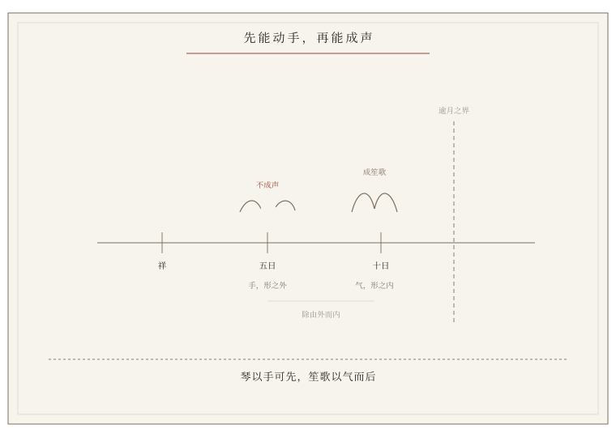

檀弓上 · 三·二十二 · 第 225 课
孔子既祥，五日弹琴而不成声，十日而成笙歌。注「哀未忘」「逾月且异旬也」「祥亦凶事，用远日」「五日弹琴，十日笙歌，除由外也。琴以手，笙歌以气」。
说什么事：同一个人，同一月内，五天不成声，十天成歌。
落在哪一层：礼，兼及礼意与乐理。论哀之去有次第。
为何编在此位：上节论作乐之限，此节以身示其限。限在纸上，此节在手上。
【经】孔子既祥，五日彈琴而不成聲，十日而成笙歌。
【注】哀未忘。逾月且异旬也。祥亦凶事，用远日。五日弹琴，十日笙歌，除由外也。琴以手，笙歌以气。
【疏】此一节论孔子除丧作乐之限。「十日而成笙歌」者，上云「弹琴而不成声」，此云十日而成笙歌之声音，曲谐和也。注「五日」至「以气」者，解先弹琴、后笙歌之意：由弹以手，手是形之外，故曰「除由外也」；祥是凶事，用远日，故十日得逾月；若其卜远不吉，则用近日，虽祥后十日，亦不成笙歌，以其未逾月也。
既祥 行过大祥之祭。
不成声 注「哀未忘」。弹之而声不成曲。
笙歌 以笙和歌。注「十日而成笙歌」。
逾月且异旬 注语。十日已越一月，且与五日不同旬。
用远日 注「祥亦凶事，用远日」。卜葬卜祭，凶事择下旬之日。
除由外 疏「手是形之外」。
孔子行过大祥之后，五天弹琴还弹不成调，十天便能吹笙唱歌。
此节以两个数目记一个人的手与口：五日，手不听使；十日，气已能成曲。注以「除由外」解其次第——哀之除，先除其在外者，后及其在内者。礼不许人一日忘哀，也不许人久不忘；它给的是一条渐去的路。
第一层 五日与十日 同样在祥后，五日不能成声，十日能成笙歌。这不是技艺之变，是心之变。注一句「哀未忘」，把这件事说定：不是手生，是心在。
第二层 琴以手，笙歌以气 注「除由外也」。手在外，故先去其滞；气在内，故后复其和。此说把「手」与「气」分成外内两层，是一个极细的观察，也是一种礼的解释法：哀之除，由外而内。
第三层 逾月与远日 注「祥亦凶事，用远日」。祥祭择下旬之日，故祥后十日已越一月。疏又补一层：若卜远不吉而用近日，虽祥后十日也不成笙歌，因为未逾月。可见「十日」不是定期，是「逾月」的下限。数目背后是月。
第四层 乐之复有其序 此节与上节「县而不乐」相接：一是悬而不作，一是作而不成声，一是成笙歌。乐之复，有三段：不作、作而不成、成。礼于乐，比于哀，更不肯让它一步跨过去。
与今日何干 凡大悲之后重回日常，人多以「能做了」为愈。此节给一个更细的尺：先能动手，再能成声，才到能成曲。三个阶段，各有它的日子。
| 左 | 右 |
|---|---|
| 既祥，五日弹琴而不成声 | 哀未忘，手不听使 |
| 十日而成笙歌 | 声已成曲，气已能和 |
| 五日弹琴，十日笙歌 | 除由外而内 |
| 琴以手 | 手是形之外 |
| 笙歌以气 | 气在内，故后复 |
| 祥亦凶事，用远日 | 故十日得逾月 |
| 卜远不吉用近日 | 虽十日亦不成，未逾月也 |
画一间空寂的堂，视点略低。左侧一张矮几上横放一张素琴，琴弦松着一根，几前地面有一处久坐的痕迹（席纹略深）。右侧稍远处一只笙放在木架上，笙管整齐，旁边一只空的酒爵。堂中无人，只有窗外一线光落在琴身与笙管之间。左半光线偏冷，右半偏暖，示先后两个时刻。不写文字、不画人。赭色只用在琴的雁足与笙架的一根横木上。
